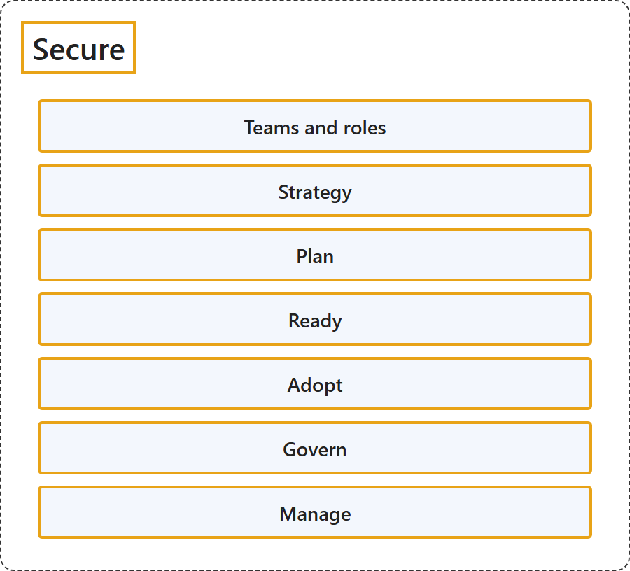

26.6 Secure
Classification

Glossary
| Term | Definition | 中文解释 | Source |
|---|---|---|---|
| Secure 安全 |
"The Cloud Adoption Framework for Azure Secure methodology provides a structured approach for securing your Azure cloud estate." | Azure 云采用框架的安全方法提供了一种保护 Azure 云资产的结构化方法。 | Microsoft, 2026f, para. 1 |
| Teams and roles 团队和角色 |
(context) "This article describes the security roles and functions required for cloud infrastructure and platforms." | （语境）本文介绍云基础结构和平台所需的安全角色和职能。 | Microsoft, 2026h, para. 1 |
| Strategy 战略 |
(context) "To be successful in the cloud, your security strategy needs to meet modern challenges that are inherent to cloud computing." | （语境）要在云中取得成功，你的安全战略需要应对云计算固有的现代挑战。 | Microsoft, 2026a, para. 1 |
| Plan 规划 |
(context) "To build a secure cloud estate from the ground up, you need to integrate security considerations into every phase of your adoption plan." | （语境）要从头构建安全的云资产，你需要把安全考量融入采用计划的每个阶段。 | Microsoft, 2026d, para. 1 |
| Ready 就绪 |
(context) "During the Ready phase of a cloud adoption journey, you focus on creating the foundation of the estate." | （语境）在云采用历程的就绪阶段，你专注于创建资产的基础。 | Microsoft, 2026e, para. 1 |
| Adopt 采用 |
(context) "When you implement your cloud estate and migrate workloads in, it's essential to establish robust security mechanisms and practices." | （语境）在实现云资产并迁入工作负载时，建立可靠的安全机制和做法至关重要。 | Microsoft, 2026c, para. 1 |
| Govern 治理 |
"Security governance connects your business priorities with technical implementations, such as architecture, standards, and policies." | 安全治理把你的业务优先级与技术实现联系起来，例如体系结构、标准和策略。 | Microsoft, 2026g, para. 1 |
| Manage 管理 |
(context) "The Manage phase of a cloud adoption journey focuses on the ongoing operation of your cloud estate." | （语境）云采用历程的管理阶段关注云资产的持续运营。 | Microsoft, 2026b, para. 1 |
References
- Microsoft. (2026a, October 19). Integrate security into your cloud adoption strategy. Cloud Adoption Framework. Microsoft Learn. https://learn.microsoft.com/en-us/azure/cloud-adoption-framework/secure/strategy
- Microsoft. (2026b, March 25). Manage your cloud estate with enhanced security. Cloud Adoption Framework. Microsoft Learn. https://learn.microsoft.com/en-us/azure/cloud-adoption-framework/secure/manage
- Microsoft. (2026c, June 2). Perform your cloud adoption securely. Cloud Adoption Framework. Microsoft Learn. https://learn.microsoft.com/en-us/azure/cloud-adoption-framework/secure/adopt
- Microsoft. (2026d, October 19). Plan for a secure cloud adoption. Cloud Adoption Framework. Microsoft Learn. https://learn.microsoft.com/en-us/azure/cloud-adoption-framework/secure/plan
- Microsoft. (2026e, May 29). Prepare your secure cloud estate. Cloud Adoption Framework. Microsoft Learn. https://learn.microsoft.com/en-us/azure/cloud-adoption-framework/secure/ready
- Microsoft. (2026f, January 5). Secure overview. Cloud Adoption Framework. Microsoft Learn. https://learn.microsoft.com/en-us/azure/cloud-adoption-framework/secure/overview
- Microsoft. (2026g, March 2). Securely govern your cloud estate. Cloud Adoption Framework. Microsoft Learn. https://learn.microsoft.com/en-us/azure/cloud-adoption-framework/secure/govern
- Microsoft. (2026h, October 1). Security teams, roles, and functions. Cloud Adoption Framework. Microsoft Learn. https://learn.microsoft.com/en-us/azure/cloud-adoption-framework/secure/teams-roles